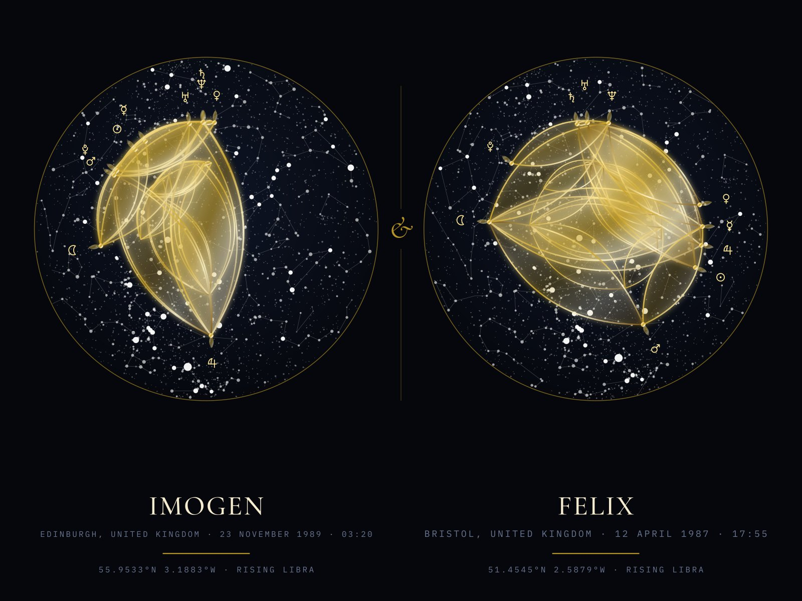
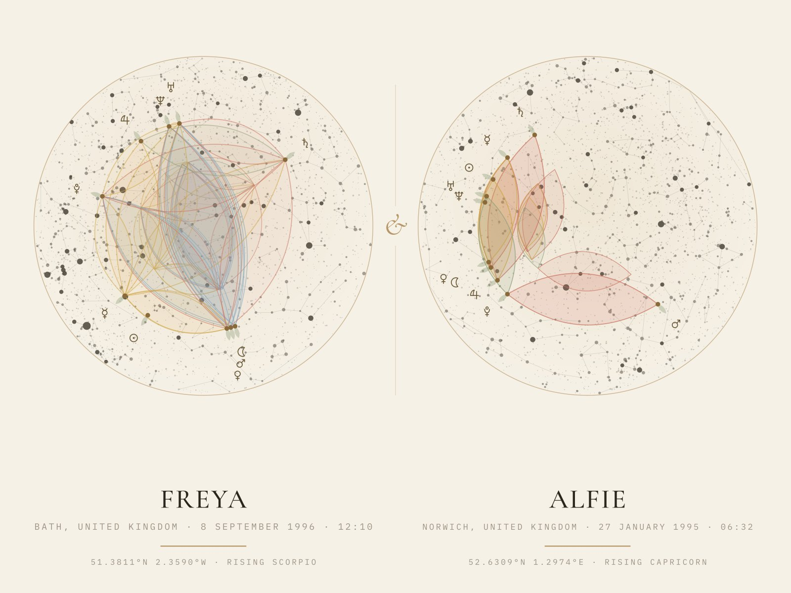
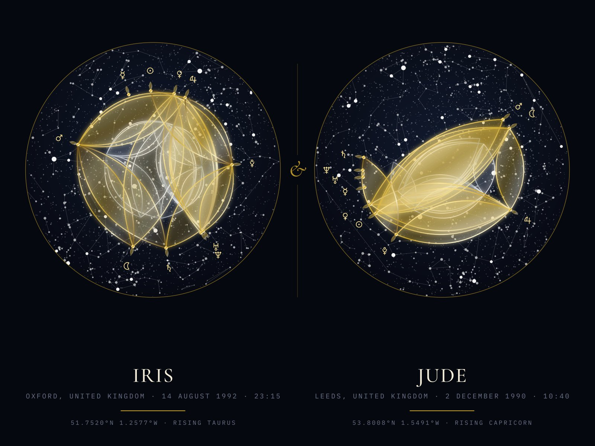
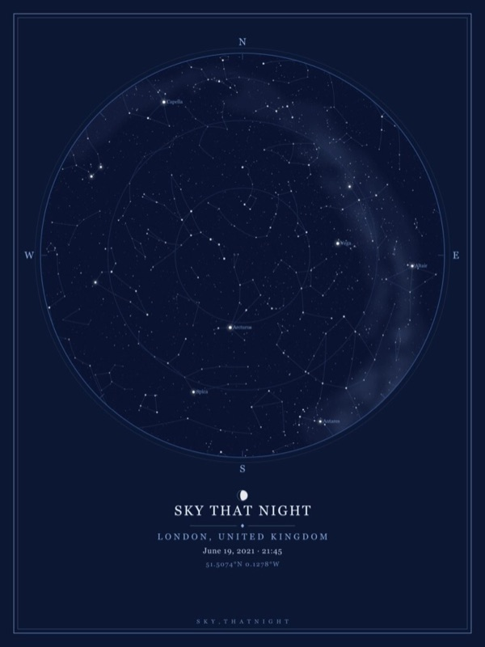

Two skies. One sheet.
Both of your birth charts, side by side on one sheet — each drawn on the real night sky of the minute and the place you were born. Ten planets each, two rising signs, one night to hang.

Two minutes, two places. One sheet.
A name, a date, a time and a birthplace for each of you — the same quiet ritual as a single chart, twice.
Tell us both minutes
Date, time and birthplace for each of you. The rising sign turns a degree every four minutes, so each chart keeps its own minute and its own time zone.
We compute two skies
Each chart gets its own heavens: Sun, Moon and eight planets placed to a tenth of a degree, above the real stars over that birthplace at that minute.
Side by side, like an heirloom
Both charts on one landscape sheet, your names beneath — giclée on 200 gsm fine-art paper, printed to order in the UK, previewed to you by email before print.
Not a template.
Two records of two skies.
Two real skies, not one wheel
Behind each chart is the night sky over that person's birthplace at the minute they were born — every star down to magnitude 6.4 that stood above the horizon, with the real constellation lines. Two places, two skies, each computed on its own.
Planets where they really were
The Sun, the Moon and eight planets come from our own ephemeris, checked against NASA JPL Horizons: the planets to within a tenth of a degree, the Moon to within 0.07° — for each of you, in your own time zone.
The preview is the print
Before anything goes to press we email you the exact file. Reply within 24 hours to fix a date, a time, a place or a spelling — the file you see is the file we print.
Four rooms of the same two skies
Every finish is the same honest pair of charts — filled petals for the aspects between each of your planets, a leaf for each of the ten.



Three ways to hang your two skies.
Museum print for now — a classic frame for the landscape sheet is coming. Every price includes free UK delivery. Made to order in the UK and dispatched in 2–4 working days. We ship to UK addresses only.
Two minutes, two places, two names.
Everything we need to draw both skies. Before anything is printed, a preview lands in your inbox — we’ll fix anything.
Sky, That Night

Our first studio, for the nights you want to keep: the real star map of any place on any date, and the Moon exactly as it looked that night. The same astronomy, the same UK printing.
Good to know.
Is it one print or two?
One landscape sheet with both charts side by side, your names beneath each — printed as one piece and framed as one piece. If you would rather have two separate prints, order two single birth charts instead.
Will we see it before it prints?
Yes — every order. As soon as you have paid we email you the finished file, exactly as it will be printed. If a name, a date, a time, a place or a spelling is wrong, reply within 24 hours and we will fix it before anything goes to press. If we hear nothing, your print goes to press after 24 hours so it still reaches you on time.
Do you need a birth time for both of us?
Yes — each chart is drawn for its own minute. Give your best estimate for each and watch the preview as you change it: the Sun and the planets barely move in a few hours, but the rising sign turns roughly a degree every four minutes. If you can, ask someone who was there.
We were born in different countries — does that matter?
Not at all. Each chart uses its own birthplace and its own time zone: the sky over one city at one minute beside the sky over another city at another minute. That is the point of the print.
How accurate are the charts?
The Sun, the Moon and eight planets come from our own ephemeris, checked against NASA JPL Horizons: the planets to within a tenth of a degree, the Moon to within 0.07°. Behind each chart is the real night sky over that birthplace at that minute — every star down to magnitude 6.4 that stood above the horizon.
Is there a written interpretation?
No. The print shows where the Sun, the Moon and the planets stood when each of you was born, the angles between them and the real stars behind — drawn accurately, with nothing written about either of you.
How long does delivery take?
Your print is made to order in a UK fine-art lab and dispatched within 2–4 working days, then delivered by tracked courier. Delivery is free to any UK address and already included in the price shown.
Can we return a personalised print?
Because each print is made uniquely for the two of you, personalised items are exempt from the standard 14-day change-of-mind return. But if your order arrives damaged, faulty or not as previewed, we will reprint or refund it in full — that right is never affected. Check your preview carefully: the file you see is the file we print.
What sizes and finishes are available?
Three landscape sizes — 40×30, 50×40 and 70×50 cm — as a museum print, shipped rolled in a tube. A classic frame for the landscape sheet is coming; if you would like one, write to us and we will tell you when. All four finishes — Copper bloom, Gold · Midnight, Garden on paper and Gold & silver — cost the same.